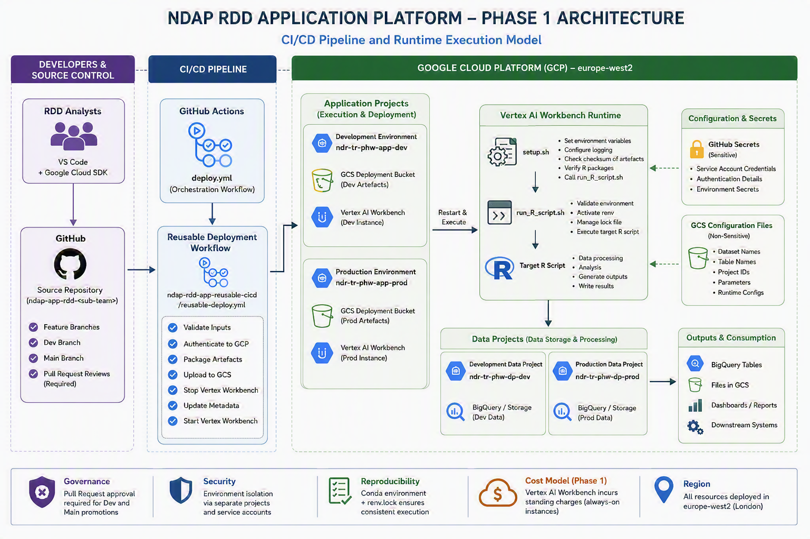

NDAP CI/CD Process Overview
Operating Model
Version: 2.0
Status: Current State (Phase 1) with Future State (Phase 2) Roadmap
Platform: Google Cloud Platform (GCP)
Primary Language: R
Region: europe-west2 (London)
Source Control: GitHub
Executive Summary
The NDAP Research and Development Directorate (RDD) Application Platform provides a standardised Continuous Integration and Continuous Deployment (CI/CD) framework for the development, testing, deployment and execution of R-based analytical workloads on Google Cloud Platform (GCP).
The platform enables analytical teams to focus on developing business logic and statistical methodology whilst deployment, runtime orchestration and infrastructure management are increasingly standardised and automated.
The current Phase 1 implementation provides:
- Standardised GitHub repository structures
- Automated CI/CD pipelines
- Controlled promotion through Development and Production environments
- Reproducible R environments through
renv - Automated deployment using GitHub Actions
- Runtime execution through Vertex AI Workbench
- Configuration-driven deployments
- Shared reusable deployment workflows
The future Phase 2 evolution transitions the platform towards a centrally managed Platform Engineering model built around:
- Containerisation
- Artifact Registry
- Cloud Run Jobs
- Cloud Scheduler
- Workload Identity Federation
- Golden runtime images
- Thin application repositories
This transition will significantly reduce operational overhead, minimise platform drift, improve scalability and reduce infrastructure costs through a fully serverless, pay-per-use architecture.
Business Context
Multiple RDD teams develop and operate analytical products that transform, process and publish public health data.
Historically, analytical applications have required bespoke deployment approaches, operational processes and runtime environments. This creates challenges around:
- Consistency
- Reproducibility
- Supportability
- Security
- Cost optimisation
The NDAP RDD CI/CD Platform addresses these challenges through the introduction of a common deployment architecture that can be reused across all analytical teams.
Examples include:
- RDD PHOF
- RDD PCC
- RDD SHRN
- Future RDD analytical teams
Architecture Objectives
The platform has been designed to achieve the following objectives.
Standardisation
Enable all RDD teams to follow a common deployment pattern.
Automation
Eliminate manual deployment activities wherever possible.
Security
Provide controlled access, environment segregation and secure deployment pathways.
Reproducibility
Ensure analytical code executes consistently between environments.
Scalability
Allow new teams to onboard without creating new infrastructure patterns.
Cost Efficiency
Reduce operational costs through shared architecture and reusable tooling.
Maintainability
Centralise common functionality and minimise duplicated engineering effort.
Architectural Principles
Principle 1 — Everything is Version Controlled
All application code, workflow definitions and deployment artefacts originate from Git repositories.
Principle 2 — Production Must Be Earned
Every deployment must progress through controlled promotion stages before reaching Production.
Principle 3 — Automate Everything Possible
Deployments, validation steps and runtime provisioning should be automated wherever practical.
Principle 4 — Shared Components Belong to the Platform
Common deployment functionality should be centrally maintained rather than duplicated across repositories.
Principle 5 — Runtime Environments Must Be Reproducible
Applications should execute using deterministic runtime configurations.
Principle 6 — Isolation Reduces Risk
Workloads should be separated wherever possible to minimise blast radius.
Platform Architecture Overview
Environment Architecture
Regional Deployment
All environments are deployed within: GCP Region europe-west2(London)
Projects
GCP projects are divided in two planes: Application & Data, which are further divided into two environments: Development & Production
Application Projects
ndr-tr-phw-app-dev (Development)
ndr-tr-phw-app-prod (Production)
Responsibilities include:
- Deployment artefacts
- Runtime execution
- Vertex AI infrastructure
- Application orchestration
Data Projects
ndr-tr-phw-dp-dev (Development)
ndr-tr-phw-dp-prod (Production)
Responsibilities include:
- Dataset storage
- Table management
- Data processing
- Analytical outputs
Benefits of Segregation b/w application & data
Reduced Blast Radius
Compromise or failure of application services does not automatically compromise data storage environments.
Improved Security
Different IAM policies may be applied to application and data layers.
Operational Isolation
Application changes can occur independently of data platform changes.
Governance
Improves auditing and ownership of platform components.
Repository Naming Convention
Repositories follow a common naming convention.
ndap-app-rdd-repo or team name
Examples:
ndap-app-rdd-phof
ndap-app-rdd-pcc
ndap-app-rdd-shrn
This enables consistency and discoverability across the platform.
Branching Strategy
The platform follows a simple promotion model.
feature/* | v dev | v main
Feature Branch
Used for:
- Development
- Bug fixes
- Enhancements
- Refactoring
Examples:
feature/new-indicator feature/refactor-processing feature/bug-fix
Development Branch
Purpose:
- Integration testing
- System testing
- End-to-end validation
Deployment Target:
ndr-tr-phw-app-dev
Main Branch
Purpose:
- Production releases
Deployment Target:
ndr-tr-phw-app-prod
Pull Request Governance
Pull Requests are mandatory for branch promotion.
Feature → Dev
Requirements:
- Peer review
- Pull Request approval
- Successful deployment
- Validation of outputs
Dev → Main
Requirements:
- Peer review
- Pull Request approval
- Successful development validation
- Release acceptance
Development Lifecycle
Step 1 – Build
Analysts develop R code using:
- Visual Studio Code
- Google Cloud SDK
- Development GCP resources
Step 2 – Commit
Changes are committed into a feature branch.
Step 3 – Review
Pull Request raised into Dev branch.
Step 4 – Deploy to Development
CI/CD pipeline automatically deploys the solution.
Step 5 – Validate
Outputs are reviewed and validated.
Validation approaches vary by team:
- Full E2E runs
- Workflow dispatch controlled runs
- Targeted validation activities
Step 6 – Promote to Production
Changes are promoted through a Pull Request into Main.
Step 7 – Deploy to Production
Automated deployment executes against Production resources.
CI/CD Process Diagram

The CI/CD framework consists of:
Application Repository
Owns:
- Business logic
- R code
- Configuration
- Package requirements
Shared Platform Repository
Repository:
Public-Health-Wales/ndap-rdd-app-reusable-cicd
Owns:
- Deployment logic
- Runtime orchestration
- Common CI/CD activities
This prevents duplication across analytical teams.
Deployment Workflow
deploy.yml
Acts as the orchestration layer.
Capabilities:
- Automated deployment
- Workflow dispatch
- Environment selection
- Secret management
- Reusable workflow invocation
Environment Selection
main -> Production
all other deployment branches -> Development
Secret Selection
Environment-specific GitHub Secrets are automatically passed to the shared deployment workflow.
Shared Deployment Workflow
Repository:
ndap-rdd-app-reusable-cicd
Workflow:
reusable-deploy.yml
Sequence of Events
Validate Inputs | Authenticate | Package Artefacts | Upload Artefacts | Stop Vertex Instance | Update Metadata | Restart Vertex Instance | Trigger Runtime
Runtime Execution Sequence (File Level)
Execution begins after the Vertex instance starts.
Vertex Startup | v setup.sh | v run_R_script.sh | v Target R Script
setup.sh Responsibilities
The startup script performs infrastructure validation.
Responsibilities:
- Configure environment variables
- Initialise logging
- Validate artefact checksums
- Verify package existence
- Launch execution pipeline
Calls:
bash run_R_script.sh
run_R_script.sh Responsibilities
Responsible for runtime control.
Functions include:
- Environment verification
- renv activation
- Lock file management
- R script invocation
generate_lock.sh Responsibilities
Responsible for dependency management.
Activities:
- Verify Conda environment
- Create environment if missing
- Install dependencies from packages.txt
- Generate renv.lock
This guarantees reproducible package versions.
Configuration Management
Sensitive Configuration
Stored in: GitHub Secrets
Examples:
- Service account credentials
- Authentication secrets
Non-Sensitive Configuration
Stored within GCS-hosted configuration files.
Examples:
- Dataset names
- Table names
- Bucket names
- Project names
Benefits:
- Environment portability
- Reduced code changes
- Easier operational management
Security Controls
Mandatory Peer Review:
Required at:
Feature -> Dev Dev -> Main
Environment Isolation:
Development and Production operate independently.
Credential Segregation:
Each environment uses dedicated credentials.
Controlled Deployment Path:
Production deployments must originate from approved source-controlled changes.
Project Segregation:
Application and data projects remain logically separated.
Multi-Team Operating Model
The architecture is intentionally replicated across RDD teams.
Benefits:
- Consistent platform experience
- Reduced support complexity
- Standard onboarding process
- Shared operational tooling
Current State Assessment (Phase 1)
The current architecture successfully delivers:
- Automated deployments
- Reproducible execution
- Shared deployment workflows
- Controlled environment promotion
- Reusable CI/CD capabilities
However, several challenges remain.
Increased Duplication & Complexity:
Nearly all the scripts in CI/CD process are replicated in each team's deployment pipeline, resulting in significant duplication, complexity and forcing analysts/scientists to undertake engineering maintenance activities.
Infrastructure Cost:
Vertex AI Workbench incurs standing infrastructure costs even when workloads are not running.
Runtime Management Complexity:
Workbench lifecycle management introduces operational overhead.
Shared Runtime Risks:
Multiple workloads can execute on a shared runtime environment.
This increases potential blast radius.
Target State Architecture (Phase 2)
The strategic direction for the platform is a move towards a Platform Engineering operating model.
Vision
Analytical teams should focus exclusively on:
- Business logic
- Statistical methodology
- Data transformation
The platform should own:
- Runtime management
- Container builds
- Deployment orchestration
- Dependency management
- Security controls
Phase 2 Platform Model
Refer to NDAP Proposed Architecture
Thin Repository:
Application repositories will contain only:
Application Code workflow.yml packages.txt Configuration
All deployment logic will reside centrally.
Benefits:
- Plug-and-play onboarding
- Minimal duplication
- Simplified maintenance
- Consistent standards
Golden Runtime Images:
The platform will maintain approved base images.
Examples:
R 4.4 Base Image R 4.5 Base Image
These images will include:
- Approved R versions
- Approved package baselines
- Common platform tooling
Stored within:
Artifact Registry
Benefits:
- Zero Runtime Drift: Development and Production execute identical images.
- Consistent Package Versions: Eliminates environment inconsistencies.
- Faster Deployments: Common packages no longer require installation during execution.
- Simplified Support: One known runtime baseline.
Cloud Run Execution Model
Phase 2 replaces long-lived runtime infrastructure with ephemeral execution.
Container Starts | Execute Workload | Container Stops
Benefits:
- Pay-Per-Use: Only pay when workloads execute.
- No Standing Charges: No idle infrastructure costs.
- Better Cost Efficiency: Ideal for scheduled analytical workloads.
- Automatic Scaling: Supports platform growth without infrastructure redesign.
Share-Nothing Architecture
Each workload executes independently.
Workload A | Container A
Workload B | Container B
Workload C | Container C
Benefits:
- Minimal Blast Radius: Failure impacts only the affected workload.
- Improved Reliability: No shared runtime contamination.
- Better Isolation: Applications execute independently.
- Predictable Behaviour: Every run starts from a clean environment.
Immutable Deployments
Container images become versioned deployment artefacts.
Benefits:
- Improved auditability
- Easier rollback
- Predictable releases
Strategic Outcome
Phase 1 standardised how analytical applications are deployed.
Phase 2 standardises the platform itself.
The future operating model removes infrastructure concerns from analytical teams and provides a centrally managed, reusable and cost-efficient platform.
Analysts focus solely on analytical code.
The platform provides:
- Deployment
- Security
- Runtime management
- Dependency management
- Monitoring
- Scaling
- Governance
This results in a modern, cloud-native analytical platform that is easier to operate, cheaper to run, faster to scale and significantly more resilient than the current state.